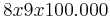

De: La Frikipedia, la enciclopedia extremadamente seria.
De: La Frikipedia, la enciclopedia extremadamente seria. De: La Frikipedia, la enciclopedia extremadamente seria.

|
Este artículo necesita ser ilustrado. Busca una afoto en nuestro depósito de imágenes o donde sea y ponla, pero que no sea pr0n, que se cabrea el señor del adSense y nos corta el grifo de los dólare. Y sin dólare no hay servidor... |
| De la serie gobernantes de ayer y de hoy: | |||
| Ramón Luis Valcárcel | |||
| |||
| Nacimiento | ¿Pues dónde va a ser? Todo el mundo lo sabe, ¿no?. | ||
| Muerte | Ni lo se ni me importa. | ||
| Cargo | Presidente de la Región de Furcia | ||
| Ideología | Derechista profacista, pero con una gran visión de futuro. | ||
| Nacionalidad | mexicomurciana | ||
| Cónyuge | No se sabe pero ya se está hablando de un posible enlace de Varcárcel | ||
| Dinastía | Generales Furcianos. | ||
| Notas | En el colegio, 100110101101. | ||
Ramón Luis Varcárcel Siso, Ramón Luis Va a la cárcel, Ramón Luis va a la cárcel por Sisar o Varcárcel a la cárcel son algunas de las cosas que le describen palabrejas que le dicen sus amigos los de izquierdas derchas poulares (PP), Partido Potable (no como el agua de [[Murcia]]).
Se cree que fué el y no Aristortoles, gran fisólofo, el creador de la democracia pues lleva gobernando (al menos en la Región de Furcia), desde que se inventó la democracia. Ha hecho logros importantes y cuenta con un competente ayuntamiento, basado en las palabras ayunta (que viene a ser juntos) y miento (que signifaca precisamente eso), o sea, todos los concejales mentimos juntos, pero, eh, cobramos por ello y nos ponemos morados. Ojo de nuevo que morado es el color de los billetes de 500 y están forrados, por tanto, el color del concejal pobre es verde abilletado mientras que el concejal furciano ya toma un color dorado 200 o un sorprendente morado primaveresco color 500.
Logró crear campos de golf marrones y alimentó a Camacho durante 20 años, lo que le da fuerzas para seguir como entrenador. Ha llenado Murcia de mierda y está creando nuevos pr0yectos.
El mismo ha reestructurado el ayuntamiento, puesto acequias sin agua e inventado proyectos para hecerse el interesante aunque una vieja se caiga por una grieta de 20 palmos fomentar el turismo.
Ha inventado un salsa para los espaguetis de Dios, esto es totalmente falso.
Y ha contado hasta el 3 ocho tumbado.
Sus amistades con Pong Extreme o participar en el Caso Malya sin saberlo.
Entre tú y yo nos importa un carajo dónde nació.
Sus padres eran Ortoman Flowerpower y Filomena Obeso, que fueron sobornados por el propio Varcárcel para cambierse los apellidos por Varcárcel y Siso, cosa que en México no era común, ni en ningún lado. Varcárcel pensó que llamarse Ramón Luis Flowerpower Obeso ere corriente y normal, pero parecía un golfo, o séase, tú veías su nombre y dices: a claro, este es un golfo y un ladrón, seguro. Asíque después de razonar, antes de nacer, sobornó a sus padre para cambierse los apellidos por: Varcárcel (1ª persona del presente-pretérifuturadoperfecto subjetivo del verbo ir a la cárcel) y Siso (lo mismo pero del verbo sisar, y sin cachondeo, significa robar). Con estos apellidos puedo llegar a presidente sin saber nadie que era un golfo. ¿Quién va a sospecharlo? (sarcasmo de 3000 pares de cojones).
Se cree que en vez de traerlo un cigüeña de donde quiera que fuera, vino en gaviota (de ahí, el símbolo del PP, partido de Vrcacárcel)
En el colegio fue violado y marginado, y así se quedó, además nunca se masturbó.
Desde jóven ya demostró sus dotes para el GOLF-EO y sustracción de capital, mentira y su profesor se percató de que iba para la política cuando no paraba de robar, estafar hablar en clase y su profesor le decía que no lo hiciese más. Al día siguente a los 5 minutos el profesor ya le estaba diciendo: Me prometiste que no lo volverías ha hacer. Viendo sus dotes para la política, Pendario Flores (profesor de Varcárel al que seguro que le daban collejas de pequeño), le aconsejó que dejara los estudios cuanto antes si quería ser político.
Dejó los estudios con 12 años y adquirió poderes más tarde no sin antes pluriemplearse en el Lidl hasta los 20, que siguió robando y haciendo el golfo.
A los 25 adquirió poderes universitarios por error (pues cuando acabó la primaria se largó de esa mierda cosa tan buena que es estudiar. Los rayos de cátedra habrían matado y deshecho el cerebro de cualquier humano sin estudios), pero en el caso de Varcárcel no había mucho que deshacer, así que sobrevivó adquiriendo poderes corruptivos.
Después adquirió un cargo de presidente del PP y aún sigue con sus aventuras de presidente 20 años.
En este tiempo se ha dedicado plenamente a Murcia y la Región de Furcia.
Ha ganado a Pong Extreme, Julián Muñoz le odia y tiene un hobby, poner mierdas de perro por Murcia.
Varcárcel tiene una serie de poderes corruptivos que se incrementan cuanto menos puntos bigotescos tiene Julián Muñoz, de ese modo puede durar más de 400000 años gobernando.
Poderes corruptivos recién adquiridos.
En esta etapa quieres acceder a la democracia y lo consigues rápidamente como diputado.
1. Concejal: Te permite invocar a un concejal de oro macizo con la inscripción ヱヲンヴヵヶヷヸヹヺ .
2. Volar: Efectivamente, alguién te deja dinero prestado, se le olvida, te lo da para construir un parque y vuela (generalmente la trayectoria que describe el billete es proporcional a su valor en metros por segundo y directa al bolsillo).
3. Desaparecer: -Requisitos: Un billete de avión (la desparición también es proporcional a la cantidad de dinero en la maleta).
Poderes corruptivos fase evolutiva
El cambio de diputado a presidente requiere cambios de casa a chalet, duplicación de salario, 2 guardaespaldas, putas de lujo, etc. En este duro proceso de cambios el sujeto no puede adquirir nuevos poderes.
Poderes Corruptivos Finales
En esta etapa se la suda la democracia, se te pone cara de plátano, tienes más plata (y oro), no eres capaz de adivinar la adivinanza del plátano, esa de ORO PARECE PLATA NO ES, SI NO LO ADIVINAS ERES SUBNORMAL UN POCO TONTO, ERES SUBNORMAL, COÑO.
Generalmente se despierta un pasión por el golf, de este modo se llegan a experimentar con campos de golf marrones.
1. Platanomancia: Mira tío, si sabes lo que es eso envía un SMS con la palbras LOSÉ al 7789 o puedes llamar con la tarjeta de crédito tú teléfono e ingresar la llamada en esta cuenta corriente este número: 902 44 73 96.
las llamdas cuestan 1 € céntimo nanosegundo
2. Camachoinvocación: Puedes crear un ejército de Camachos que secarán y devastarán pastarán en los campos de golf. También se usan como recogepelotas (sólo de golf o poké balls, para comerse el bicho de dentro, vamos lo que viene a ser el Pokémon de toda la vida).
3. Votoamañado: Proviene del chino aunque no se lo que significa ni me importa (y supongo que a tí tampoco). Según estudios reveladores este poder permite al canalla político hacer que voten los muertos (sarcasmo). Que extraño poder ¿eh?(ironía)
No intentéis adquirir poderes corruptivos pues podrían afectaros seriamente o incluso mataros, no sin antes transformaros en plátanos cejudos, cuya única salvación es ir a Canarias, vover, pisar una mierda al salir del avíón y tienes 0,00000000000000001 nanosegundos para escupir y darle a Obama, mi cuñado, ¿quién conoces si no que se llame Obama?.
Lo de antes es totalmente cierto, avalado por prestigiosos científicos como Marc Truco Kalasnikov Trejamuska o Teluroso Esmeraldo de la Barca, y Miliki.
Tampoco sé (y sigue sin importarme), la edad de Varcárcel pero según los científicos, tras los complejos cálculos nos han dado una fórmula para desvelarlo:  (esto no sabemos a que cuento viene, creemos que Varcárcel quiso tomar parte en la cración de la fórmula).
Realmente la fórmula es esta: Años que lleva gobernando + Edad en la que empezó a reinar a gobernar x 100 = 400.000, ahora lo divides por 400.000 = 1 y lo multiplicas por 500.000 = 500.000, pero te llevas 7, no sin antes multiplicar por 4 de nuevo y te llevarás 3, te da = 123.785.367 o parecido, pues se lo quitas a 100 y te da - mucho.
Por cierto, ¿de qué estábamos hablando?. Es que no me acuero porque estaba viendo pr0n mejorando otro párrafo del artículo.
En estos 20000 de presidencia todos sabemos que Varcárcel ha hecho muchas cosas en Murcia, y las veremos más tarde (bueno eso si quieres porque puedes deja de leer estas porquerías líneas y pasarte al párrafo de abajo)
Desde que accedió a los poderes corruptivos a tomado parte en casos como el atraco a la tienda de dónuts (quien no conoce el famoso atraco ese que..., que..., bueno eso ya pasó), el Caso Gurtel o el Caso Malaya (en el que logró disminuir un 3,141595... el bigote de Julián Muñoz, reamató a Jesús Gil y todo sin que él lo supiera.
Estos últimos años ha decidido crear un tranvía por las calles de Murcia (que a nadie le importa porque ya no funciona), reestructuración cultural de Murcia, tirando 2 bibliotecas por discotecas, o era al revés (palabras de Varcárcel cuando se acabó el proyecto), esto supuso un alto nivel de canis.
También contribuyó con el teatro (hay unas 200 obras en la ciudad, 3 de ellas en el teatro, las otras en la calle).
Como gran presidente (yo creo que ni eso), ha de tener un hobby, pero este no ha sido investigado por los científicos, que exclusivamente declararon a WiFrikipedia que cualquier cosa viniendo de Varcárcel era de esperar. Esta desde luego sí.
Su hobby está potenciado por sus poderes corruptivos, este se trata de llenar de mierda las calles de la ciudad, de perro, claro, pero gracias a un campo magnético de hiperrayos la posición mierdesca se hace de notar, tienes un milisegundo de esperanza zapática de no pisar una mierda, en general, sales del césped con el trofeo, que seguro que Pong Extreme. Cuando intentas buscar una mierda de perro o la quieras pisar (no quiere decir que lo haya pensado y o u intentado, eh, malpensao), o simplemete para tirársela a la vieja cuyo marido 235 % sordo no te deja dormir debido al volumen al que oye la tele, por poner un caso corriente (el porcentaje de sordera es variable), no encuentras ni mierda, no verás ni una.
Entonces pueden pasar 33 cosas:
1. No encuentras la mierda y el viejo de los huevos no te deja dormir (o lo que hagas por las noches).
2. Se tequitan las ganas de ir a por una mierda, te olvidaas de todo o te acuerdas que tienes que ir a la boda del tío Pokémon y decides atajar por el césped. Lógicamente, pisas la ansiada mierda.
3. Te pasa lo mismo pero esta vez ya no quieres pisar la mierda, ahora que ya no quieres la mierda te encuentras y te tropiezas con una, al caerte de boca adivina contra que vas a parar, 3 pistas, es marrón color mierda, huele a mierda y sabe a mierda.
En 20 años dieron para mucho y como tiene muuuuuuuuuuucho tiempo libre, ha hecho grandes cosas como presona lo que sea que es.
1. Llenar las calles de Murcia de mierda.
2. Vaciar la Región de mierda para llenar más todavía Murcia de mierda.
3. Ganar a Pong Extreme.
4. Figurar en esta lista.
5. Contar hasta el infinito.
6. Hacer los 100 metros césped sin pisar una mierda (los tontos tienen suerte).
7. Hacer 7 logros.
8. Tener poderes corruptivos.
9. Tener cara de plátano.
10. Por su culpa Chuck Norris pisó una mierda: adivina el logro: Seguir vivo.
11. Llenar el tranvía de mierda.
12. Crear el primer campo de golf marrón (culo de Camacho)
13. Ser más listo que los que lo votan.
14. Evitar los bombardeos de huevos en la Asamblea Regional. (Ahora le tiran heces de perro).
15. Participar en el Caso Malya sin saberlo y reducir el bigote de Julián Muñoz.
16. No haberse hecho nunca una paja.
17. Tener los huev*os de pulsar Alt F4 en una página pr0n sin supervisión de un adulto y siendo noob.
... Varcárcel contó hasta el infinito para que le diera su voto?
... no se lo dió?
... este artículo te importa tanto a mi como a Varcárcel o a mi?
... los poderes corruptivos existen de verdad?
... es eneamigo de Julián Muñoz porque le quitó 303 puntos de bigote pero remató a Jesús Gil?
... Varcárcel no es tonto pero cultiva cardos?
... Varcárcel trafica con mortadela?
... acabas de pisar una mierda?
... lo anterior es cierto y odias a Varcárcel?
... Varcárcel es travesti presidente 20 años ya?
... Carmen de Mairena hizo de árbrito/a/cosa durante la emocionante partida de Pong Extreme?
... el Pong Extreme fue creado por un español pero lo puso en japonés para joder?
... ese tío está en la Frikipedia?
メモャヤュユョ... ヨラリルレロヮワヰヱヲンヴヵヶヷヸヹヺ ぁあぃいぅうぇえぉおかがきぎくぐけげこごさざしじすずせぜそぞ?
... Varcárcel tiene un artículo en la Frikipedia?
... Varcárcel Siso no son sus apellidos reales, sólo que no quería ser acusado por su nombre de golfo y ladrón y sobornó a sus padres antes de nacer para cambiar sus apellidos?
... no sabes nada?
Autor(es):